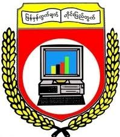
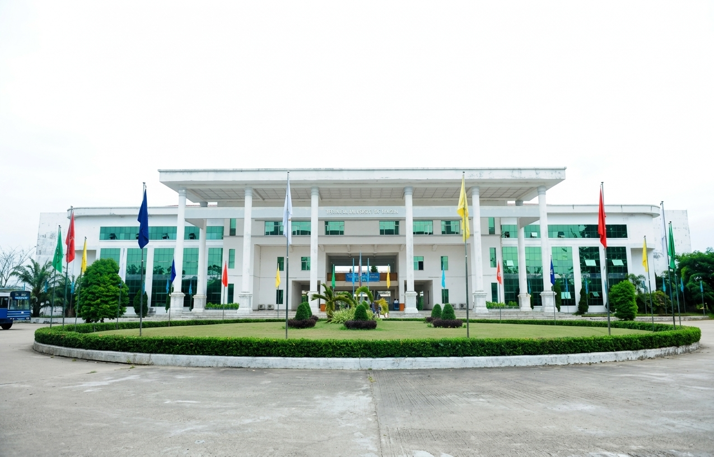
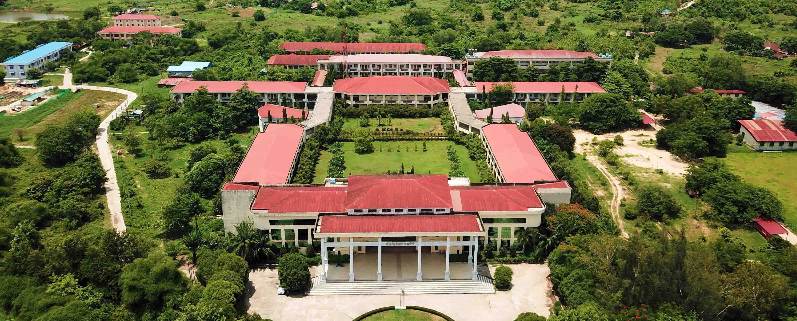
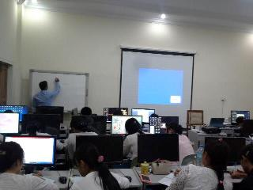
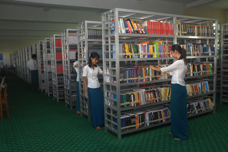

Leading Higher Education Institution in Computer Science & Technology

The University of Computer Studies, Yangon (UCSY) is one of the leading higher education institutions in Myanmar specializing in computer science, information technology, and software engineering under the Ministry of Science and Technology (Department of Advanced Science and Technology).
The origins of UCSY date back to 1971 when it was established as the Universities' Computer Center (UCC) under the University of Yangon. It was upgraded to the Institute of Computer Science and Technology (ICST) on March 29, 1988, and later renamed the University of Computer Studies, Yangon (UCSY) under the Science and Technology Development Law in 1998. UCSY maintains strong academic and research partnerships with regional and international organizations, including ASEAN University Network (AUN) and ASEAN-Japan Cyber Security collaborations.
Near Shwe Nan Tha Village, Mingaladon Township, Yangon Region, Myanmar.
(Subject to Annual Qualification Criteria)



Shwe Nan Tha Village, Mingaladon Township, Yangon Region, Myanmar